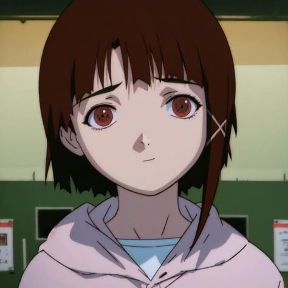
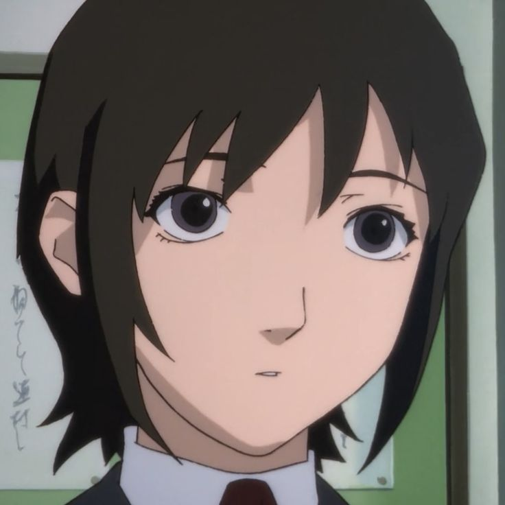
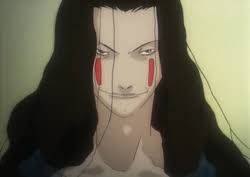

Lain Iwakura
Estudiante de secundaria reservada que descubre una conexión profunda y divina dentro del Wired.

Estudiante de secundaria reservada que descubre una conexión profunda y divina dentro del Wired.

La mejor amiga de Lain en el mundo real, representando su último ancla con la humanidad física.

Creador del protocolo Tachibana IPv7, considerado a sí mismo el "Dios del Wired".